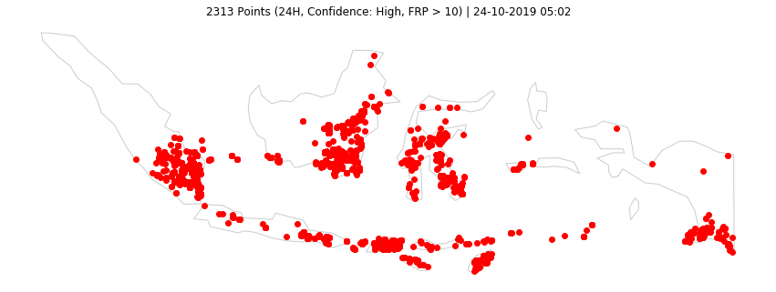
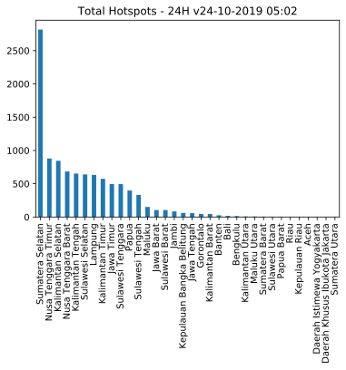
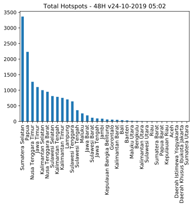

Last updated: 24-10-2019 05:02
Data VIIRS (NASA FIRMS)
Titik Api @Indonesia
10316 (24H) | 15246 (48H) | 29842 (7D)
Olah Data dan Visualisasi Sebaran Titik Api di Indonesia.
Acq. Date: 22-10-2019 10:54 -- 24-10-2019 01:00 WIB (24H) | 21-10-2019 11:12 -- 24-10-2019 01:00 WIB (48H) | 16-10-2019 11:06 -- 24-10-2019 01:00 WIB (7D)
Home Top 3 GitHub Sumatera Kalimantan Sulawesi Maluku & Papua Jawa Bali & NT

Data 24H
| Kategori | #Titik |
|---|---|
| Confidence High | 500 |
| Confidence Nominal | 8338 |
| Confidence Low | 1478 |
| Total | 10316 |
| Confidence High or FRP>10 | 2313 |
Data 48H
| Kategori | #Titik |
|---|---|
| Confidence High | 700 |
| Confidence Nominal | 12320 |
| Confidence Low | 2226 |
| Total | 15246 |
| Confidence High or FRP>10 | 3333 |
Data 24H
| # | Provinsi | Total | H | N | L | HFRP10 |
|---|---|---|---|---|---|---|
| 1 | Sumatera Selatan | 2817 | 211 | 2557 | 49 | 500 |
| 2 | Nusa Tenggara Timur | 879 | 14 | 637 | 228 | 122 |
| 3 | Kalimantan Selatan | 845 | 17 | 622 | 206 | 195 |
| 4 | Nusa Tenggara Barat | 685 | 31 | 430 | 224 | 284 |
| 5 | Kalimantan Tengah | 653 | 13 | 532 | 108 | 152 |
| 6 | Sulawesi Selatan | 640 | 6 | 512 | 122 | 131 |
| 7 | Lampung | 633 | 95 | 502 | 36 | 200 |
| 8 | Kalimantan Timur | 574 | 7 | 469 | 98 | 149 |
| 9 | Jawa Timur | 496 | 37 | 420 | 39 | 121 |
| 10 | Sulawesi Tenggara | 496 | 7 | 390 | 99 | 120 |
Data 48H
| # | Provinsi | Total | H | N | L | HFRP10 |
|---|---|---|---|---|---|---|
| 1 | Sumatera Selatan | 3365 | 220 | 3091 | 54 | 545 |
| 2 | Papua | 2232 | 41 | 1543 | 648 | 443 |
| 3 | Nusa Tenggara Timur | 1271 | 68 | 950 | 253 | 220 |
| 4 | Jawa Timur | 1103 | 63 | 928 | 112 | 258 |
| 5 | Kalimantan Selatan | 1003 | 19 | 764 | 220 | 212 |
| 6 | Nusa Tenggara Barat | 951 | 38 | 651 | 262 | 390 |
| 7 | Sulawesi Selatan | 814 | 16 | 659 | 139 | 177 |
| 8 | Kalimantan Tengah | 789 | 13 | 664 | 112 | 179 |
| 9 | Kalimantan Timur | 756 | 15 | 618 | 123 | 212 |
| 10 | Lampung | 706 | 97 | 571 | 38 | 211 |
Data 24H

Data 48H
